Futbolchining huquqi shartnomada emas — himoyada yashaydi.
Oylik toʻlanmadimi, kontrakt shartlari buzildimi, federatsiya qarori adolatsizmi — biz masalani klub bilan muzokaradan FIFA Football Tribunal va Lozanna sport arbitrajigacha olib boramiz. Uyushma aʼzolari uchun bepul.
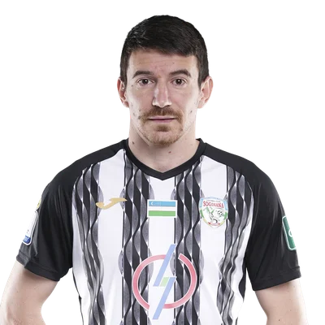
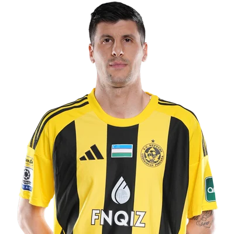
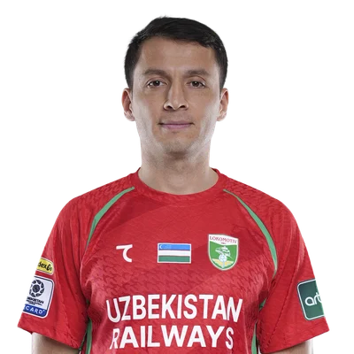
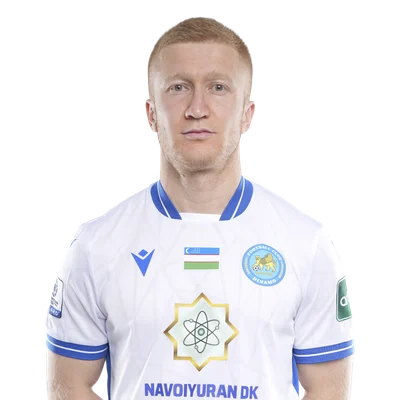
Superliga, Pro Liga va chet el klublaridagi 1 240+ futbolchi uyushma aʼzosi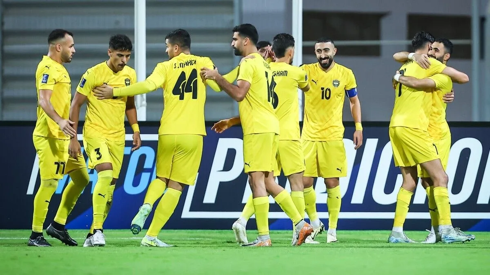
Har bir murojaat 48 soat ichida yuristga tushadi
Clubs where our members play · Superliga 2026
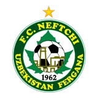
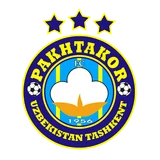
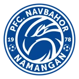
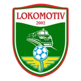
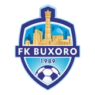
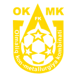
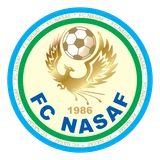
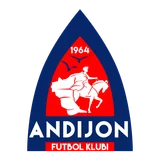
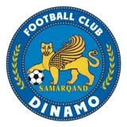
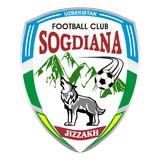
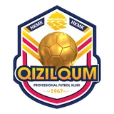
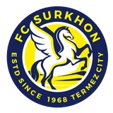
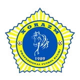
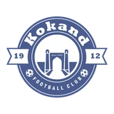
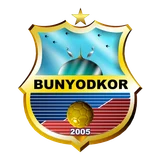
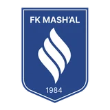
Futbolchi yolgʻiz qolmaydigan
toʻrt yoʻnalish
Uyushma aʼzolari uchun barcha xizmatlar bepul. Har bir ish boʻyicha sizga alohida yurist biriktiriladi va ish yopilguncha u bilan ishlaysiz.
Kontrakt va uni imzolash
- Amaldagi shartnomani tahlil qilamiz — muddat, summa, toʻlov jadvali, uzaytirish sharti.
- Yangi kontraktni Oʻzbekiston mehnat qonunchiligi, PFL va FIFA reglamentlariga moslashtiramiz.
- Imzolash jarayonida yurist yoningizda boʻladi — ogʻzaki vaʼdalar hujjatga tushadi.
Oylik qarzdorligi
- Qarzni rasman qayd etamiz: hisob-kitob, yozishmalar, guvohliklar toʻplanadi.
- Klubga sudgacha daʼvo yuboriladi — koʻp hollarda masala shu bosqichda hal boʻladi.
- Natija boʻlmasa — FIFA Football Tribunal, klubga transfer taqiqi sanksiyasi bilan.
Federatsiya qarorlari va diskvalifikatsiya
- Intizomiy qaror, diskvalifikatsiya yoki jarimani ustidan shikoyat tayyorlaymiz.
- Apellyatsiya muddatlarini nazorat qilamiz — kechikkan shikoyat koʻrilmaydi.
- Antidoping protsedurasida vakil boʻlamiz, «B» namunasi huquqini tushuntiramiz.
Xalqaro darajadagi himoya
- FIFA Football Tribunal (DRC) va FIFPRO huquqiy tarmogʻi orqali ish yuritamiz.
- Lozanna sport arbitraj sudi (CAS) bosqichigacha hamrohlik qilamiz.
- Klub bankrot boʻlsa — FIFA/FIFPRO Fund for Football Players jamgʻarmasiga ariza.
Bir murojaat — beshta aniq holat.
Har bosqichda xabar olasiz.
Murojaat yuborganingizdan soʻng u raqam oladi va shaxsiy kabinetingizda jonli kuzatiladi. Holat oʻzgarganda Telegram-bot darhol xabar beradi — hech narsani soʻrab yurishga hojat yoʻq.
Anonim kanal
Ismingizni koʻrsatmasdan xabar bering — shartnoma matnini yoki kvitansiyani biriktirish kifoya.
Anonim yozishHujjat biriktirish
Kontrakt, toʻlov kvitansiyasi, yozishma skrinshoti — PDF, JPG yoki PNG, 20 MB gacha.
Murojaat ochish
FIFPRO —
70 000 futbolchi
bir tarmoqda
FIFPRO 70 dan ortiq milliy uyushmani birlashtiradi va jahon futbolida oʻyinchilar manfaatini ifodalaydi. Oʻzbekiston futbolchilar uyushmasi shu tarmoqning toʻlaqonli aʼzosi — yaʼni sizning ishingiz kerak boʻlsa chegaradan tashqarida ham davom etadi.
Uyushma haqida70+ milliy uyushma
Yevropa, Osiyo, Afrika va Amerikadagi hamkasblar bilan toʻgʻridan-toʻgʻri aloqa.
Yordam jamgʻarmasi
Klub bankrot boʻlganda toʻlanmagan oylik uchun FIFA/FIFPRO fondiga ariza.
Yagona huquqiy standart
Kontrakt va transfer masalalarida FIFA reglamentlari asosida yagona amaliyot.
FIFPRO World 11
Aʼzolarimiz jahon ramziy terma jamoasi ovoz berishida qatnashadi.
Professional futbolchi
bilishi shart
Shartnoma imzolashdan oldin toʻrtta narsa aniq yozilganiga ishonch hosil qiling:
- Muddat — boshlanish va tugash sanasi, uzaytirish sharti kimning ixtiyorida.
- Summa — oylik, bonus, imzo puli; valyuta va soliq kimning zimmasida.
- Toʻlov tartibi — aniq sana, kechikishda qanday javobgarlik.
- Ikki tomon imzosi va muhr; har bir oʻzgartirish faqat yozma qoʻshimcha kelishuv bilan.
Maslahatsiz «daʼvom yoʻq» degan hujjatni imzolamang — bu keyingi barcha talablaringizni bekor qiladi.
- 1-qadam. Qarzni qayd eting: shartnoma, toʻlov tarixi va yozishmalarni saqlang.
- 2-qadam. Klubga rasmiy daʼvo yuboriladi va javob muddati belgilanadi.
- 3-qadam. Javob boʻlmasa — PFL, federatsiya organlari yoki FIFA Football Tribunal.
Har bosqichning oʻz muddati bor. Kechikkan ariza koʻrilmasligi mumkin — shuning uchun birinchi kunlardanoq yozing.
FIFA qoidalariga koʻra, amaldagi kontrakt tugashiga olti oy qolganda yoki u tugaganidan keyin boshqa klub bilan muzokara olib borishingiz mumkin. Undan oldingi muzokara intizomiy javobgarlikka olib keladi — klub ham, oʻyinchi ham jazolanadi.
- Namuna olishda vakilingiz hamrohlik qilishi mumkin.
- Barcha bayonnomalarning nusxasini olishga haqlisiz.
- «B» namunasini qayta tahlil qilishni talab qilishingiz mumkin.
Har qanday dori — vitamin va biologik qoʻshimchalar ham — javobgarligi oʻyinchi zimmasida. Qabul qilishdan oldin tekshiring.
Superliga Symbolic XI
2026
Mavsumning eng yaxshi oʻn bir oʻyinchisini jurnalistlar emas, futbolchilarning oʻzlari tanlaydi. Ovoz berish uyushma aʼzolari uchun ochiq va 30-noyabrgacha davom etadi.
Free Agent Camp
Kontraktsiz qolgan futbolchilar uchun uyushma tashkil qiladigan yigʻin: tartibli mashgʻulot jarayoni, oʻyin amaliyoti va klub skautlari oldida oʻzini koʻrsatish imkoni.
Yangiliklar va
huquqiy tahlil

FIFA RSTP 2027: oʻyinchi uchun eng muhim 12 oʻzgarish
1-yanvardan kuchga kiradigan yangi reglament kontraktni bir tomonlama bekor qilish, transfer oynasi va voyaga yetmaganlar qoidalariga tegadi. Nima oʻzgaradi va bu Oʻzbekiston futbolchisiga qanday taʼsir qiladi.
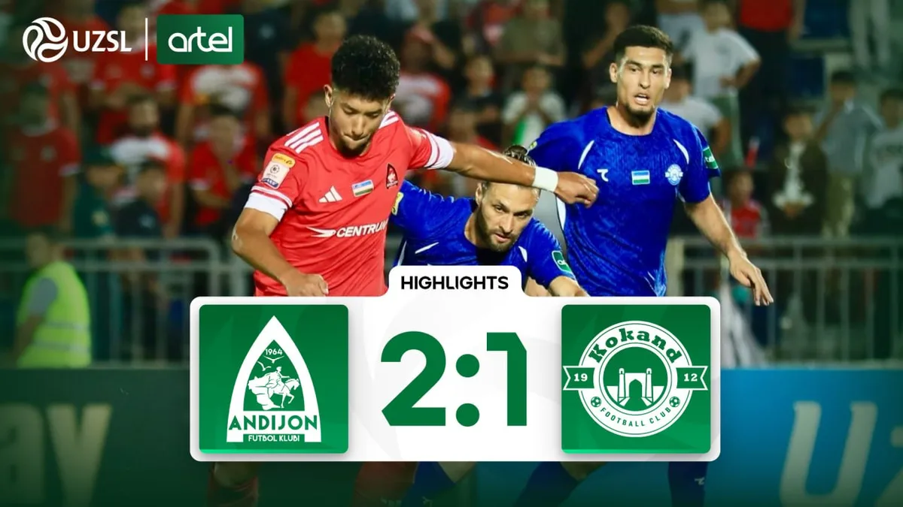
FIFPRO World 11 uchun ovoz berish boshlandi
Aʼzolarimiz jahon ramziy terma jamoasini tanlashda ishtirok etadi.

Chet eldagi klub oylikni toʻlamasa — amaliy yoʻriqnoma
Qaysi hujjatlarni birinchi kundanoq saqlash kerak va daʼvo qanday tuziladi.
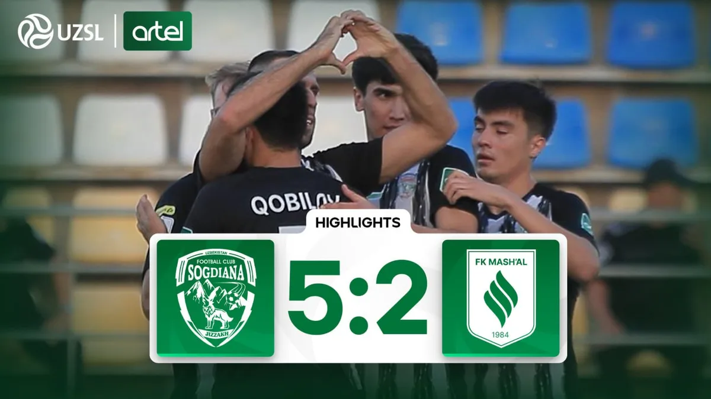
Uyushma Pro Liga klublarida seminarlar oʻtkazdi
Kelishilgan oʻyinlar xavfi va xabar berish yoʻllari boʻyicha 9 ta jamoa.
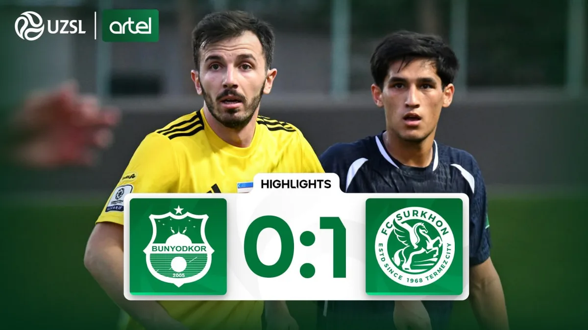
Ikki futbolchi FIFA jamgʻarmasidan toʻlov oldi
Klub tugatilgach toʻlanmay qolgan oylik xalqaro fond hisobidan qoplandi.
The union charges no membership fees —
partners make that possible
Uyushma aʼzoligi — bepul.
Himoya esa hamma narsani oʻzgartiradi.
Telegram orqali bir daqiqada roʻyxatdan oʻting, anketani toʻldiring va birinchi murojaatingizni yuboring.